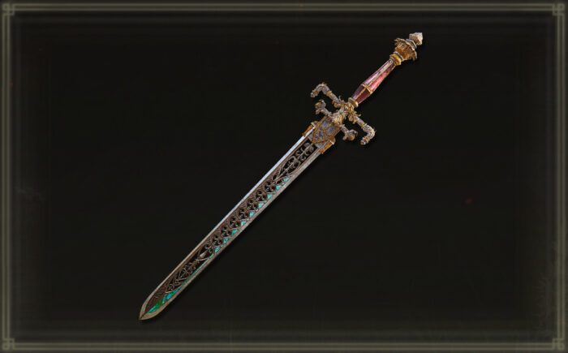

A Espada da Noite e da Chama é uma espada lendária de Elden Ring, que possui um design elegante, com uma lâmina fluida e ornamentos místicos. Ela é uma arma poderosa que combina magia e combate físico, com habilidades especiais associadas à Noite e à Chama. A espada possui duas habilidades principais: Chama da Noite, que cria um feixe de fogo, e Lâmina da Noite, que invoca magia das sombras para atacar os inimigos. Essa combinação de magia de fogo e escuridão faz com que a espada seja ideal para jogadores que desejam uma abordagem versátil no combate, alternando entre ataques físicos e mágicos. Ela é especialmente eficaz para builds híbridos, que utilizam tanto força quanto destreza, aproveitando o poder arcano da espada para causar dano em diferentes formas.